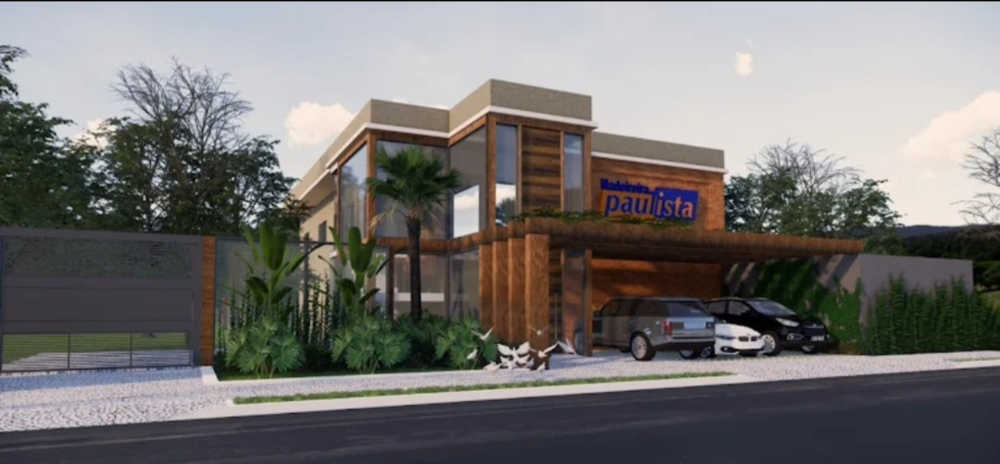
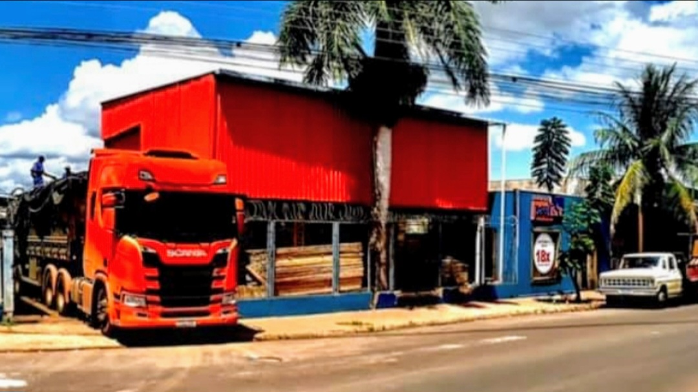
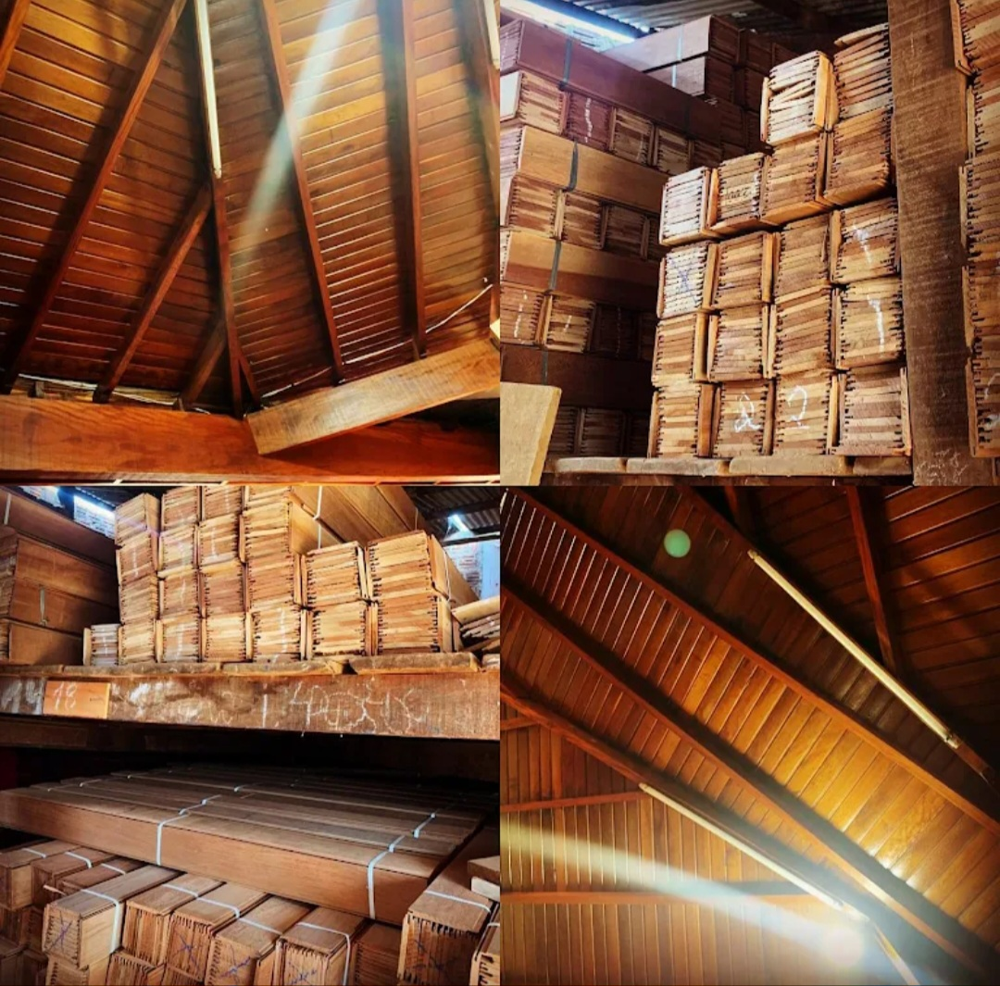
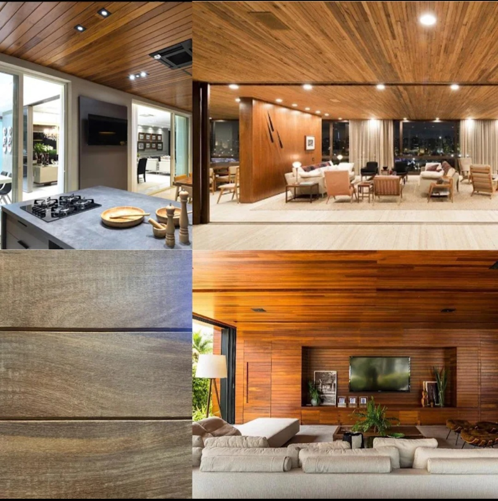
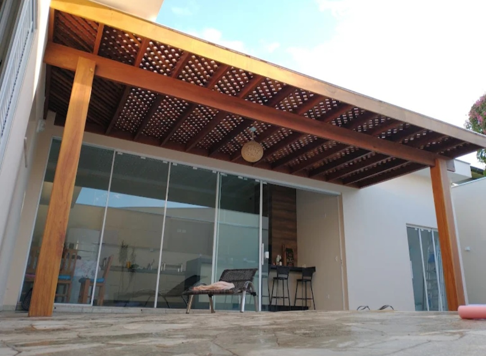

Madeiras • Ourinhos - SP
A Madeiras Nobres Paulista é referência em qualidade, sofisticação e excelência no fornecimento de madeiras para projetos de alto padrão.
Trabalhando com materiais selecionados e acabamento premium, a empresa atende desde projetos residenciais até grandes obras, oferecendo soluções que unem durabilidade, beleza e elegância.
Com atendimento especializado e compromisso com a satisfação do cliente, a Madeiras Nobres Paulista realiza entregas para todo o Brasil, garantindo praticidade e confiança em cada pedido.
Endereço: Av. Comendador José Zilo, 1390
Bairro: Distrito Industrial Dr. Hélio Silva
Cidade: Ourinhos - SP
WhatsApp: (14) 99660-4182
Falar no WhatsApp✔ Madeiras de alto padrão ✔ Qualidade e durabilidade ✔ Atendimento especializado ✔ Soluções para projetos residenciais e comerciais ✔ Entrega para todo o Brasil ✔ Acabamento sofisticado



